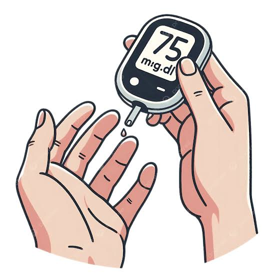
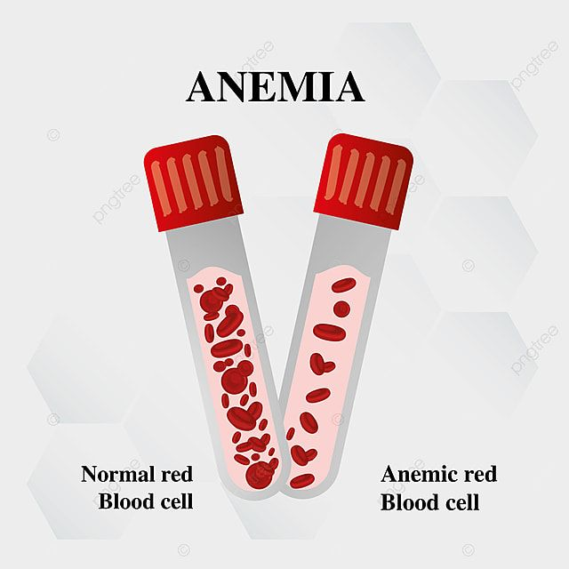
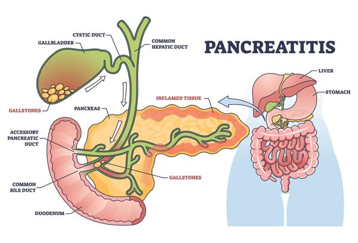
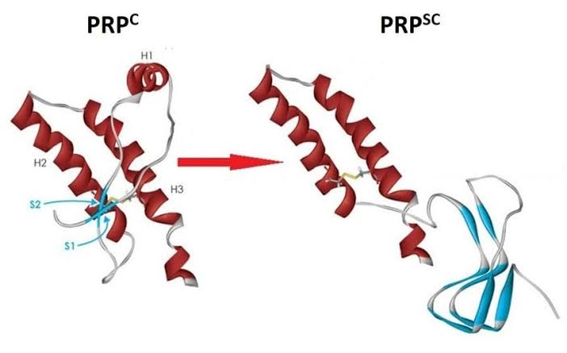
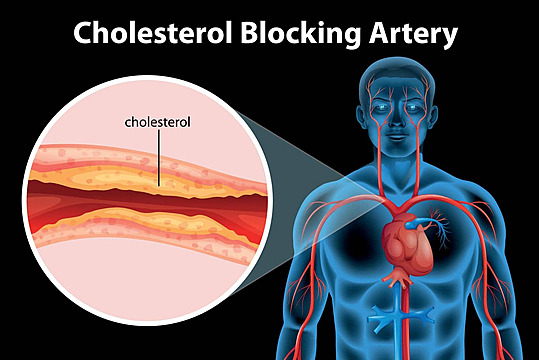
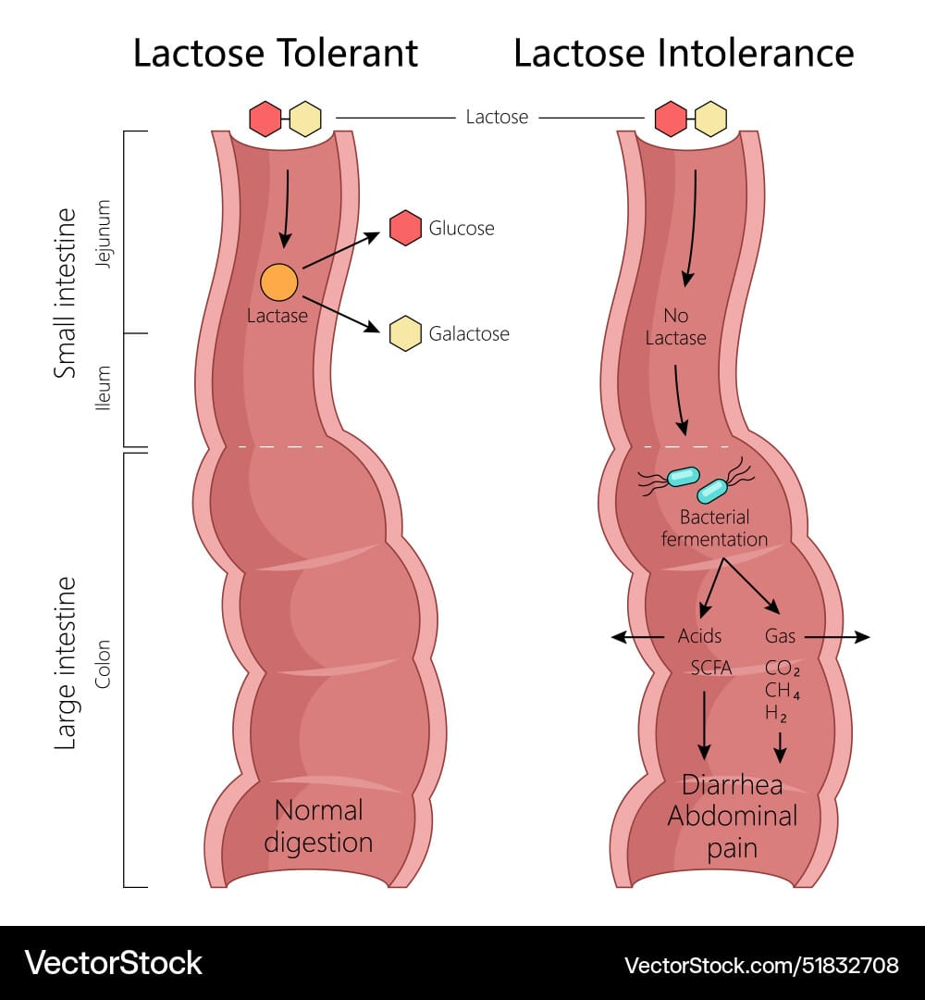

Diabetes Mellitus Tipo 1 y Tipo 2
Diferencias fisiopatológicas, manifestaciones clínicas y mecanismos hormonales involucrados.
Medicina en construcción

Diferencias fisiopatológicas, manifestaciones clínicas y mecanismos hormonales involucrados.

Alteración genética que modifica la forma de los eritrocitos y afecta el transporte de oxígeno.

Inflamación aguda del páncreas por activación prematura de enzimas digestivas.

Proteínas anormales capaces de inducir alteraciones en otras proteínas del sistema nervioso.

Trastorno hereditario asociado a elevadas concentraciones de colesterol LDL.

Deficiencia de lactasa que provoca síntomas digestivos tras consumir productos lácteos.
Una de las estrategias más útiles fue relacionar la fisiología normal con casos clínicos reales. Esto nos permitió comprender mejor el papel de la insulina, el glucagón y los mecanismos de regulación de la glucosa.
Elaborar esquemas y discutir conceptos entre compañeros facilitó la comprensión de temas complejos y fortaleció el aprendizaje significativo.
Estudiante de Medicina
Estudiante de Medicina
Estudiante de Medicina
Estudiante de Medicina
Estudiante de Medicina
Estudiante de Medicina
Proyecto académico desarrollado para el curso TICCAD (Tecnologías de la Información y Comunicación para el Aprendizaje y el Desarrollo).